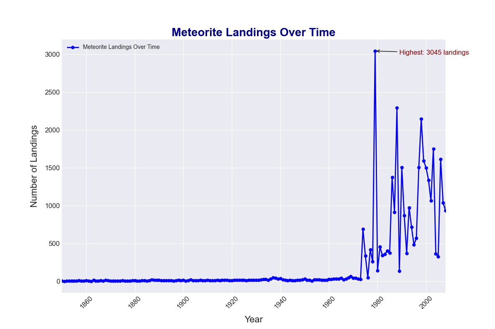
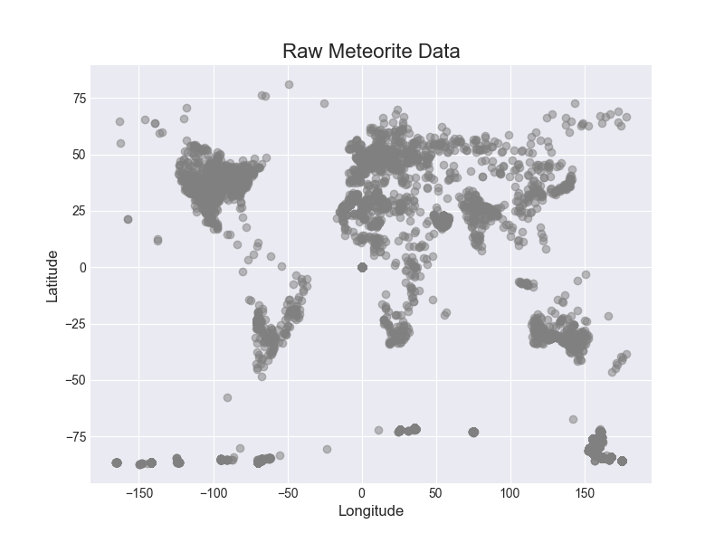
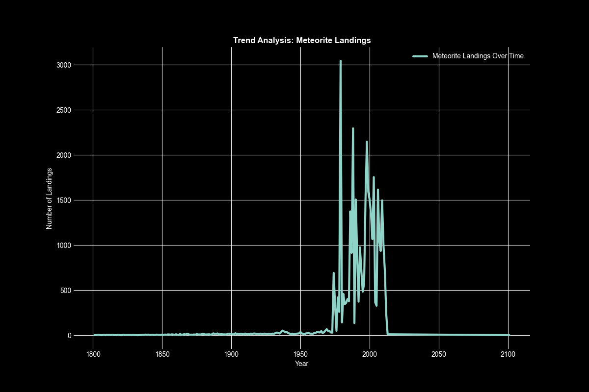
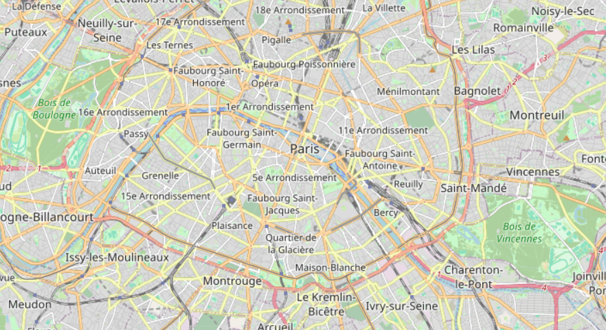

Landings Over Time
Impact Locations
Data Processing Steps

1. Loaded and combined meteorite landing data from CSV files, removed duplicates, and filtered missing values.
→

2. Filtered data for years after 1800 and analyzed trends in the number of meteorite landings over time.
→

3. Created a map displaying locations using folium.